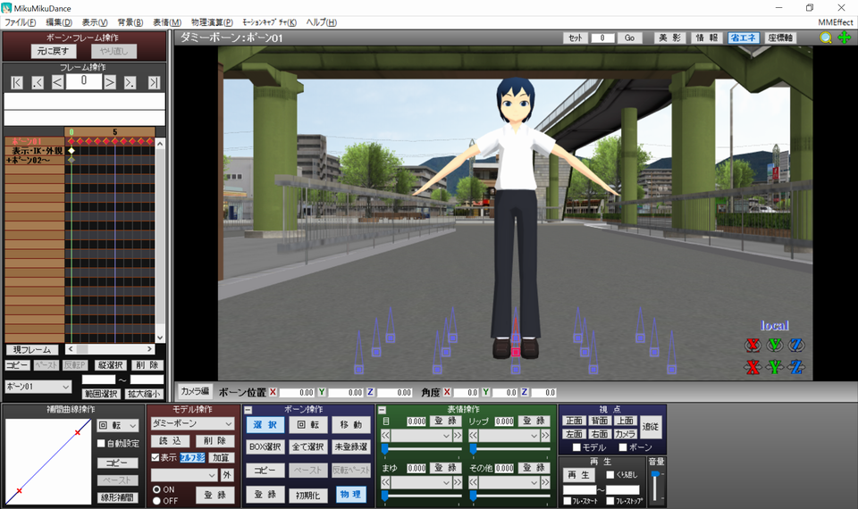

impact-earthquakeは、重い物体が落下した時のような、瞬間的に強くなって徐々に減衰していく地震のモーションを作ることができるツールです。
VMD生成ボタンを押すことで、MMD用のモーションデータであるVMDファイルを生成します。
使用にあたっては、以下のような手順を踏むのがおすすめです。
画像付きで詳しく説明します。
モデル操作パネルからダミーボーン.pmdを読み込みます。
ダミーボーン.pmdは「MikuMikuDance_v926x64\UserFile\Model\ダミーボーン.pmd」の場所にあります。
ダミーボーン.pmdを読み込んだらそのままモーションデータを読み込みます。
読み込むモーションデータは本ツールで生成したvmdファイルです。
画像のようにキーフレームがずらっと並んだら成功です。

モデルの外部親登録はモデル操作パネルの「外」ボタンから行います。
画像のように設定して「外親登録」ボタンを押します。
アクセサリの外部親登録はアクセサリ操作パネルの画像のプルダウンから行います。
登録ボタンを忘れずに押すようにしてください。